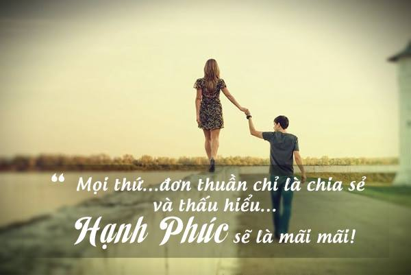
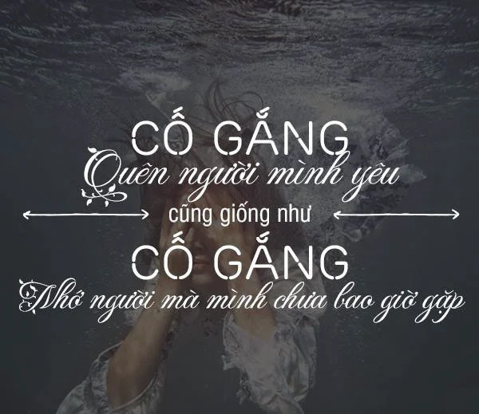
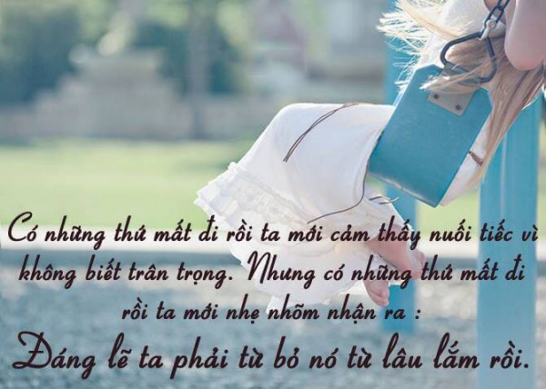
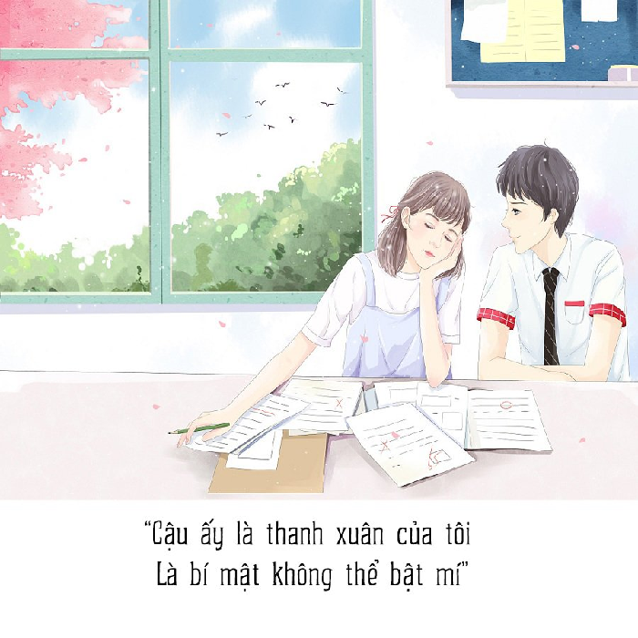
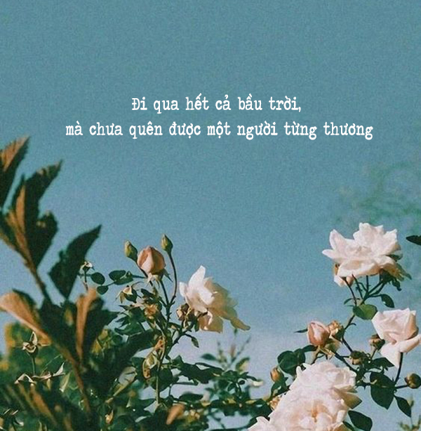
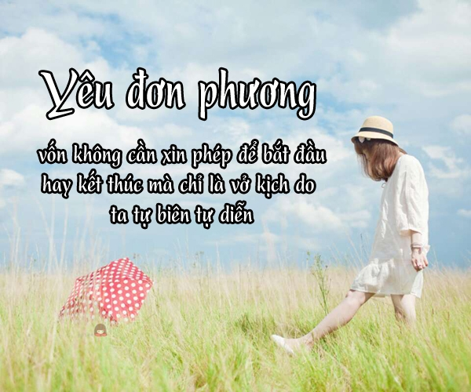
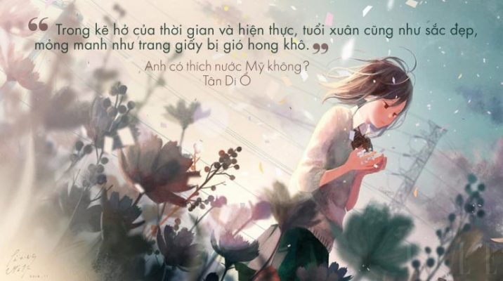
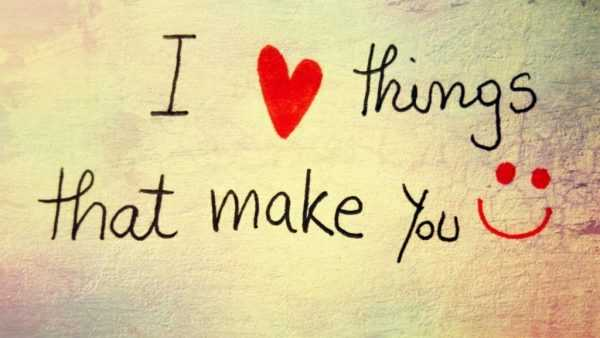

Những câu nói hay về tình yêu: STT, CAP, TUS đủ thể loại buồn vui

Ty Nguyen
CEO ❤️ AhaChat. Love babies & chatbot.Những câu nói hay về tình yêu đủ thể loại buồn vui đang được nhiều bạn trẻ chia sẻ trên mạng xã hội trong thời gian gần đây. Bài viết dưới đây tổng hợp những câu nói hay về tình yêu, những stt, cap, tus về tình yêu buồn, tình yêu đơn phương, tình yêu tan vỡ, tình yêu hạnh phúc, tình yêu sâu sắc cùng với những stt về tình yêu bằng tiếng Anh cho bạn tham khảo. Chắc chắn bạn sẽ tìm được những câu stt phù hợp với tâm trạng của bản thân để đăng lên các trang mạng xã hội cho bạn bè, người thân thấu hiểu bạn hơn.
Xem thêm:
- 9999+ câu STT hay, CAP - TUS hay bất hủ mọi thời đại được SHARE nhiều nhất
- 999+ STT buồn, CAP tâm trạng, TUS ngắn cực HAY mọi lứa tuổi
- 999+ STT, CAP, TUS thả thính ngắn siêu HAY, ngọt ngào, dễ thương
- 999+ STT vui, CAP hài hước, thả thính vui nhộn về tình yêu, cuộc sống
- 999+ STT hay chất như quả đất, CAP ngầu về tình yêu & cuộc sống
- Những câu nói hay về tình bạn: STT, CAP, TUS buồn vui đủ thể loại
- 9999+ Tên nick Facebook hay, ngầu, đẹp, chất cho Nam & Nữ
- Full 1001+ Icon Facebook 2020 mới nhất & Các biểu biểu tượng FB HOT
Những câu nói hay về tình yêu hạnh phúc

Đang trong giai đoạn tình yêu hạnh phúc, bất kỳ ai chẳng muốn nghe những câu nói ngọt ngào. Những câu nói ấy khiến trái tim của những người đang yêu cảm thấy hạnh phúc và ấm áp hơn bao giờ hết. Hơn nữa, những câu nói hay về tình yêu hạnh phúc làm cho tình yêu của họ luôn tràn ngập màu hồng.
Hóa ra, tất cả chúng ta, có đi nhiều nơi, mê mải đủ chốn thì nơi muốn đến nhất vào cuối đời, vẫn là trong lòng nhau.
“Cho dù bạn từng bị tổn thương 99 lần, thì cũng phải tin rằng lần thứ 100 sẽ gặp được tình yêu đích thực. Dũng cảm bước tiếp trên con đường tình cảm, chứ không phải suy tính hơn thiệt. Tin tôi đi, điểm cuối con đường nhất định là hạnh phúc.” (Làm một người tài hoa)"
"Hạnh phúc nhất trên đời không phải gặp được người tuyệt nhất ở những tháng ngày đẹp nhất. Mà là một người từ từ nhìn mình già đi, không cần ở những năm tháng đẹp nhất, mà ở một độ tuổi phù hợp nhất, nắm tay nhau cùng đi."
"Ai yêu ai bao nhiêu không quan trọng, ai vì ai nỗ lực bao nhiêu mới là vấn đề. “Đến sau cùng, con người vẫn luôn giỏi đưa ra lí do để rời xa, hơn là lí do để cùng nhau cố gắng”
Cuối cùng, gặp được nhau là do ý trời, có thể nỗ lực ở cạnh nhau hay không, vẫn là do ý người."
"Tin anh đi, bầu trời không phải lúc nào cũng màu xám. Chỉ là nỗi buồn làm em muốn chối bỏ những ngày xanh.""
Đôi khi bạn sẽ phải chia xa người mà bạn yêu thương, nhưng sự chia cách ấy không làm bạn yêu người đó ít đi chút nào mà trái lại, khoảng cách ấy khiến bạn yêu người ấy nhiều hơn.
Tình yêu như một cơn gió, bạn không thể thấy nhưng bạn sẽ luôn có thể cảm nhận được nó.
Thế giới rộng lớn là thế, có người sẵn sàng ở bên chăm sóc, đó chính là phúc phận. Người ta hay đặt rất nhiều hàm ý cho từ "yêu", thế nhưng thật ra ý nghĩa của nó rất đơn giản: một người, cho tận đến những giây phút cuối cùng cũng không bỏ bạn mà đi.
“Nếu bạn yêu hai người một lúc, hãy chọn người thứ hai. Bởi vì nếu như bạn thật sự yêu người thứ nhất thì bạn đã không có tình cảm với người thứ hai.”
Có người nói, một tình yêu đẹp, không phải là chiếm hữu bạn như cơn sóng dữ, mà là cưng chiều bạn như dòng nước dịu êm.
Trong những mối quan hệ, hãy nghĩ đơn giản thì mọi chuyện sẽ đơn giản hơn. Vì trái đất hình cầu, những người yêu nhau sẽ về với nhau
Khi mình nhớ tất tần tật những gì liên quan đến một người nào đó có nghĩa mình luôn nhớ đến người đó.
"Trên thế giới này luôn luôn có người khiến bạn bó tay, cho dù anh ấy tồi tệ, cho dù việc xấu của anh ấy đầy ra đấy nhưng đối với bạn, không phải người đó thì không được. Đây gọi là tình cảm số Pi, vô hạn không tuần hoàn."
Yêu một người là nghĩ về người đó cuối cùng trước khi đi ngủ và nhớ về người đó đầu tiên khi tỉnh dậy
“Hạnh phúc nhất trên đời không phải gặp được người tuyệt nhất ở những tháng ngày đẹp nhất. Mà là một người từ từ nhìn mình già đi, không cần ở những năm tháng đẹp nhất, mà ở một độ tuổi phù hợp nhất, nắm tay nhau cùng đi.
Một ngày nào đó, trời quang mây tạnh. Ta nhất định sẽ gặp được nhau...
Tình yêu nhiều khi nó chỉ là một khoảnh khắc vụt qua đời mà thôi. Vào ngày đó, giờ đó, phút đó, bạn gặp được người mà ngay ánh nhìn đầu tiên, bạn đã cảm thấy sẽ muốn bên nhau cả đời. Thế là được.
"Chúng ta đến với tình yêu không phải để tìm kiếm một người hoàn hảo mà để học cách nhìn thấy một người không hề hoàn hảo một cách tuyệt vời."
Hạnh phúc nhất trên thế gian chính là người mình thích đúng lúc cũng thích mình
Chúng ta trước giờ đều không biết được tại sao mình yêu người đó, cũng không dám chắc liệu mình có ở bên người đó mãi mãi không. Chỉ là vừa đúng vào một thời khắc nào đó, trong số hàng nghìn hàng vạn người, bạn cảm thấy khoảng trống trong tim bất ngờ được ai đó lấp đầy.
Tại sao chúng ta lại nhắm mắt khi ngủ, khi khóc, khi cầu nguyện, khi tưởng tượng,… Bởi vì những thứ tốt đẹp nhất trên thế gian này không thể nhìn thấy bằng mắt mà phải cảm nhận bằng con tim và cả tâm hồn.
Duyên phận là một điều vô cùng thú vị, đến một lúc nào đó, tất cả những bối rối trong cuộc đời sẽ có câu trả lời, đó sẽ là lúc mọi chuyện lại về đúng chỗ của nó. Những người sinh ra dành cho nhau, rồi sẽ nhìn thấy nhau và nắm lấy nhau trong cuộc đời này."
Yêu nhau, gặp nhau là do trời định nhưng để có thể đi cùng nhau lại là sự cố gắng
Các cặp tình nhân luôn có bài hát của riêng họ. Âm nhạc là thứ ngôn ngữ của tình yêu. Nó kể cho chúng ta nghe về những câu chuyện... mà đôi khi chẳng cần đến lời.
"Tình yêu không phải thức ăn nhưng nó cho ta mọi gia vị... Vị ngọt của sự khởi đầu, vị chua bởi những lần cãi nhau, vị cay của những lần phải khóc và đắng khi phải chấp nhận và từ bỏ người mà ta ngỡ rằng sẽ đi theo ta suốt cuộc đời..."
Cuộc đời vô thường, thời gian có hạn. Thêm một lần gặp gỡ, cũng chính là bớt một lần gặp gỡ. Mong chúng ta trân trọng mọi khoảnh khắc cuộc đời mình.
"Có những thứ trên đời không thể mua và không cách nào giành được, những thứ chỉ có thể được tặng, và một trong những thứ đó là tình yêu."
29.Trong cuộc sống không phải tình yêu nào cũng là trọn vẹn, không phải tình yêu nào cũng được đáp lại bằng tình yêu, có những tình yêu âm thầm xuất hiện và “việc thầm yêu trộm nhớ một người, cũng giống như loài rêu mọc ở nơi tối tăm ẩm ướt, đã không được ai biết đến nhưng lại xanh tốt um tùm… Chỉ cần biết là mình đã yêu, đang yêu và có thể yêu đã là rất hạnh phúc rồi.
Trong hàng vạn người, gặp được người nên gặp là nhân duyên. Trong hàng chục người, để tâm người nên để tâm là hữu ý. Nhưng trong tất cả các mối quan hệ, gặp gỡ và để tâm một người không cần biết nên hay không nên, chính là chân tình."
Một trong những khoảnh khắc tuyệt nhất của cuộc đời không phải là yêu được một ai đó, mà là khi ta cho họ thấy sự yếu đuối nhất của bản thân mà không sợ hãi. Không sợ điều đó sẽ khiến người ta khó chịu, khiến người ta chán ghét hay bỏ chạy.
“Nếu ai đó không thể chịu đựng tôi lúc xấu xí nhất, thì cũng không xứng đáng có được tôi lúc huy hoàng nhất”
Nếu một người con gái đột nhiên trở nên rất dịu dàng, thì rất có thể vì trong tim cô ấy đã có một tình yêu
"Trong hành trình tìm kiếm tình yêu, hạnh phúc chỉ đến với những ai biết kiên nhẫn, biết lắng nghe, biết nỗ lực và dũng cảm đương đầu với thử thách"
"Tôi vừa nhận ra rằng người ta sẽ quên những gì bạn nói, sẽ quên những việc bạn làm, nhưng họ sẽ không bao giờ quên cảm giác bạn mang đến cho họ."" ― Maya Angelou"
Cảm giác hạnh phúc và bình yên nhất chính là được ôm trọn người mình yêu vào buổi tối và nhìn thấy họ đầu tiên vào buổi sáng.
Chỉ khi tin vào những gì trái tim mình cảm nhận, chúng ta mới thật sự là con người
"Ai đó lựa chọn yêu bạn, đôi khi không hẳn vì thực sự yêu, mà họ cảm thấy, đoạn đường mà họ đi trong thời điểm ấy bạn là sự lựa chọn thích hợp. Thích hợp để yêu, thích hợp để cho cảm giác an toàn. Và thích hợp cho con tim và lí trí lúc đó. Nhưng nếu chỉ hợp, người ta sẽ chẳng thể nào đi cùng nhau dài hơn. Người ta cần hiểu, cần yêu, cần thương, cần nhiều lắm những điều lớn lao để giữ gìn tình yêu đó..."
Hi vọng bạn rồi sẽ hiểu, yêu thương một người không phải là nhất quyết phải ở bên cạnh người đó mãi về sau này, mà là nhất định yêu thật trọn vẹn từng phút từng giây của hiện tại khi còn yêu.
Tình yêu không phải là những lời ước hẹn xa xôi. Đó chỉ đơn giản là cùng nhau tay trong tay suốt quãng đời còn lại, sóng gió không buông, gian khổ không rời.
Hạnh phúc cũng giống như không khí. Bạn không thể nhìn thấy bằng mắt thường. Hạnh phúc là bạn phải cảm nhận bằng cả trái tim.
Em có biết vì sao người ta lại đeo nhẫn cưới ở ngón áp út hay không? Vì ở ngón tay ấy có một mạch máu chạy thẳng đến tìm. Khi anh đeo chiếc nhẫn này vào tay của em tin tức là trái tim của chúng ta đã gắn bó với nhau. Dù sau này có bao nhiêu sóng gió đi nữa chúng ta cũng mang mãi không chia xa.
Giữa 7 tỷ người trên Trái Đất, anh lại gặp được em. Ảnh gọi đó là định mệnh.
Nụ cười của em với anh cũng như ánh mặt trời vậy, vừa ấm áp vừa là nguồn sống của anh.
Chỉ cần em yêu anh là được, cả thế giới này hãy cứ để anh lo.
Tưởng chừng những tiếng cười vô tư, những cuộc nói chuyện giản đơn, những lời đùa giỡn vu vơ… lại khiến chúng ta yêu nhau.
Em đừng làm việc vất vả quá, sau này chỉ cần yêu anh là đủ rồi. Ước mơ của em, ta cùng thực hiện, tương lai của em, anh cùng em đi.
Điều khiến chúng ta hạnh phúc nhất không phải là được rất nhiều người yêu thích. Mà đó là tìm được người yêu mình hết lòng sâu đậm, dù có ra sao cũng mãi không rời xa.
Khoảng cách giữa chúng ta nếu là một ngàn bước thì chỉ cần em đi bước đầu tiên, anh sẽ là người đi về phía em chín trăm chín chín bước còn lại.
Từ ngày em đến, cuộc sống của anh bỗng chốc trở nên tươi đẹp và rực rỡ hơn. Vì em chính là chân ái đời anh.
Có thể ảnh không phải người đầu tiên đến bên cuộc đời em. Nhưng anh xin hứa anh sẽ là người mãi mãi bên em, làm em hạnh phúc.
Những câu nói hay về tình yêu buồn

Đôi lúc tình yêu cũng khiến cho chúng ta buồn, làm chúng ta phải rơi nước mắt. Những giọt nước mắt, những đau đớn mà bạn trải qua không phải lúc nào cũng có thể bày tỏ, tâm sự với những người bạn, người thân, người đồng nghiệp. Lúc này, để giải tỏa nỗi buồn, bạn có thể đọc những câu nói hay về tình yêu buồn dưới đây nhé.
Có lẽ trong cuộc đời này người ta chẳng cần những điều quá lớn lao để phải lòng một ai đó. Đơn giản là đúng khoảnh khắc khi em yếu mềm thì anh lại chìa tay ra mà thôi.
"Dù cho bạn đã bị tổn thương sâu sắc đến thế nào, chắc chắn sẽ có một người xuất hiện, khiến cho bạn tha thứ tất cả những khó khăn mà cuộc sống trước đây từng gây ra với bạn."
3.Sau này em sẽ hiểu, tình yêu luôn có một màu, tuyệt nhiên không phải màu hồng, nhưng không ai là chưa từng mơ mộng, chỉ đến khi đau lòng quá người ta mới nhìn ra màu của tình yêu.
Đừng cố giữ những gì ngoài tầm với, Mây của trời cứ để gió cuốn đi
"Hãy giữ sự ngọt ngào đó trong tim mình, còn đau khổ, hãy gửi nó cho thời gian"
Khi bạn hoàn toàn tin tưởng vào một người mà không chút nghi ngờ, cuối cùng bạn nhận được một trong hai loại kết quả này: " Một người sẽ thành tri kỷ cả đời" hoặc " một bài học cho cuộc sống"
Nếu họ đã không đến thì cũng đừng đợi nữa, hãy cứ xem như là một người khách qua đường trong câu chuyện cũ kỹ, xem như là một chút nuối tiếc. Nói chung, thời gian rất dài, những ngôi sao và biển rộng, còn có tình yêu lâu dài, không nên nóng vội, hãy cứ chầm chậm thôi.
"Có người bảo thế giới này nhỏ lắm, đi một vòng rồi cũng về lại bên nhau. Nhưng đôi khi thế giới lại to lớn biết bao, chỉ cần quay lưng bước đi là chẳng bao giờ gặp lại..."
"Một chuyến xe bus luôn có lịch trình của nó. Nếu bạn bỏ lỡ chuyến này, thì đợi, bạn sẽ đi chuyến sau. Nếu bạn bỏ lỡ hôm nay thì thôi, ngày mai có thể gặp. Nhưng tình cảm thì không phải vậy, bỏ lỡ, tức là đã bỏ lỡ. Và có khi là mãi mãi..."
Chí ít, trong cuộc đời mình, chúng ta cũng đã nhận ra một điều: “Người một khi đã không yêu chúng ta thật lòng thì có thể buông tay chúng ta rất dễ. Và chúng ta thực sự không cần họ, cho thế giới của mình nữa, nhất định không cần”.
"Loay hoay trong chuyện tình cảm không rộng cũng không chật này khiến cả hai đều mệt mỏi. Mà tháng năm thì vội vã, có dừng lại chờ ai bao giờ. Ta chọn cách buông bỏ tình cảm.
Rốt cuộc, vẫn chỉ là người không chờ được người, tình không chờ được tình…"
So với việc gặp được người khiến tôi rung động. Thì tôi càng được muốn gặp người khiến tôi yên lòng hơn
"Có một trái tim tan vỡ thực sự là một thứ gì đó tệ kinh khủng. Nó như thể mình bị gãy xương sườn, người ngoài sẽ không thấy gì nhưng mỗi khi mình cố gắng thở thì đều cảm thấy rất nhói."
Bạn có hiểu cảm giác bản thân đã gặp đúng người. Nhưng cuối cùng lại đứng nhìn người ấy thực hiện giấc mơ của bạn với một người khác.
Điều đau khổ nhất không nằm ở những câu chuyện bạn phải chịu đựng mà là bạn phải tiếp tục sống một cuộc sống bình thường khi mọi thứ bên trong gần như vỡ vụn.
Bạn có thể mất một phút để cảm thấy thích một người, một giờ để mà thương một người, một ngày để mà yêu một người. Nhưng phải mất cả đời để quên một người.
Luôn có những ngày bạn có tất cả mọi thứ, nhưng lại cảm giác như không có gì
"- Anh độc thân, em cũng độc thân. Anh biết điều đó có ý nghĩa gì không? Đó là không ai thích chúng ta"
Tình cảm không thể quên cũng giống như một đoàn tàu đi trong đường hầm dài đằng đẵng, đường hầm rất dài, rất tối, tối tới mức khiến người ta nghẹt thở.
Khi mất nhau, thứ làm con người ta day dứt là kỉ niệm chứ không phải là con người...
Ích kỷ một chút cũng không sao. Người nào khiến mình đau lòng thì đừng gặp nữa, người nào khiến mình thất vọng thì dù tốt đến đâu cũng đừng qua lại nhiều.
"Sau khi chúng ta tìm kiếm, rồi tổn thương, sau đó rời đi, lại có thể hoàn toàn tin tưởng tình yêu như trước kia, đây chính là một loại dũng khí."" Rừng Na Uy I Haruki Murakami "
Tột cùng của nỗi đau không phải hôm nay em khóc vì anh. Mà là ngày mai em vẫn phải gạt đi giọt nước mắt ấy mà mỉm cười nhưng anh bên người khác.
Nhớ tên anh sao thật đơn giản, nhưng quên đi tên anh lại là điều em không thể làm được.
Hóa ra bông hoa ấy không phải dành cho tôi, chỉ là tôi đi qua giữa mùa hoa đang nở rộ đẹp nhất. Hoá ra người ấy cũng không phải dành cho tôi, chỉ là tôi bước đến bên đời người lúc người cô đơn nhất.
Một trong những đau đớn của đời người là mới hôm qua còn tay trong tay bên nhau. Nhưng hôm nay chỉ còn là hai tiếng "đã từng".
Còn gì bi kịch hơn việc người cũ còn thương. Những người ấy hôm nay đã không còn thương mình.
Điều đau khổ nhất của cuộc đời em chính là yêu anh, yêu sai người, sai cả thời điểm.
Một trong những bất hạnh đau đớn nhất của cuộc đời chính là lúc chưa có năng lực lại gặp được người mình muốn chăm sóc cả đời.
Khoảng cách giữa tôi và cậu ấy không phải là không gian địa lý mà là hai tiếng "bạn thân".
Hoá ra tận cùng của nỗi buồn không phải là rơi nước mắt. Mà đó là khi nước mắt em tuôn rơi, không có một người giúp em lau nước mắt.
Hồi ức về anh luôn là thứ khiến trái tim em tan vỡ. Nó khiến cho em cười vì những tháng ngày đã qua khi bên anh. Nhưng cũng khiến cho em khóc vì đã không còn những tháng ngày ấy nữa.
Vì em là con gái nên dù có mạnh mẽ đến thế nào thì cũng rất cần một bờ vai mỗi khi em yếu lòng. Bờ vai ấy em luôn mong là anh, nhưng không phải anh.
Tôi sợ nhìn thấy ai đó bước ra khỏi cuộc đời mình nên có lẽ đóng chặt các cánh cửa lại là điều tốt nhất. Nhưng anh vẫn cứ vô tình như vậy, chân thành bước vào cuộc đời em rồi lạnh lùng đi ngang qua thế giới của em.
Em hỏi bản thân mình rất nhiều, đã dành tất cả cho cuộc tình ấy rốt cuộc nhận lại được những gì. Chỉ có những khoảng trống hoang hoải trong tâm hồn và nỗi lòng trống trải mà thôi.
Cái giá của hạnh phúc là sự ràng buộc. Cái giá của tự do là cô đơn. Chỉ tiếc con người ta kì lạ thay. Lúc cô đơn lại thèm ràng buộc. Lúc hạnh phúc thì lại muốn được tự do.
Con người vẫn cô đơn trong từng nhịp thở, mỗi bước chân đi. Đôi tay nhỏ không biết thu mình vào đâu mỗi độ gió lạnh tràn về.
Để có được trái tim của người khác em phải mang trái tim của mình ra để trao đổi. Nhưng sau bao lần em cho đi, em chỉ nhận lấy đau thương.
Những câu nói hay về tình yêu tan vỡ

Chuyện tình yêu đôi lứa không phải lúc nào cũng trọn vẹn yêu thương, tràn ngập màu hồng mà sẽ có cả những lúc tan vỡ. Dưới đây là một số câu nói hay về tình yêu tan vỡ cho những trái tim đã chịu nhiều tổn thương.
Kỳ thực có rất nhiều điều muốn nói nhưng người đối diện đã không còn là người ta muốn dốc bầu tâm sự
"Suy cho cùng, trên đời này thứ mệt mỏi nhất vẫn chính là tình yêu.
Cô đơn thì tự do nhưng đôi khi lại cô độc. Tình yêu thì hạnh phúc, những rồi lại ôm trên mình nỗi bất an, lo lắng, và trăm ngàn suy tư không tên."
Ở một nơi nào đó trong trái tim này vẫn tồn tại một bóng hình, không thể tiếp tục yêu, cũng chẳng thể quên đi, chỉ là đôi khi nhớ về vẫn mãi day dứt không thôi
Đôi khi không phải anh không xứng hay em không xứng, không phải là anh không tốt hay em không tốt, chỉ đơn giản là chúng ta gặp nhau sai thời điểm nên đành bỏ lỡ, thế thôi.
Chúng ta đều nghĩ rằng chia tay là tốt cho đối phương, nhưng lại chưa từng nghĩ rằng ở lại bên nhau sẽ tốt cho cả hai
Điều đau khổ nhất của cuộc đời em chính là yêu anh, yêu sai người, sai cả thời điểm.
Tha thứ cho một người rất dễ, nhưng để tin tưởng đối phương một lần nữa thì khó vô cùng. Hâm nóng một trái tim cần rất nhiều năm, làm nguội lạnh một trái tim chỉ trong khoảnh khắc
Thời gian thay đổi, lòng người cũng đổi thay. Cuộc sống tựa như một bộ phim điện ảnh không có suất chiếu lại. Có những thứ dù chúng ta có nỗ lực đến thế nào cũng chẳng bao giờ trở lại như xưa. Trên đời này, khoảng cách xa nhất không phải là yêu cũng chẳng phải hận, mà là người bạn vốn hiểu rõ dần trở nên xa lạ.
Có rất nhiều cuộc tình đến rồi đi, yêu rồi kết thúc, có nhiều cách để kết thúc tình yêu trong bình lặng, nhưng cũng có những cuộc tình kết thúc rồi day dứt cả một đời Đôi khi tình yêu cũng là một loại tổn thương. người tàn nhẫn chọn làm tổn thương người khác, người tử tế làm tổn thương chính mình
Chúng ta đều từng thích nhau, tiếc rằng không cùng lúc
Nỗi buồn lớn nhất là không yêu nhưng vẫn cố tỏ ra hạnh phúc, nỗi đau lớn nhất là đau nhưng vẫn phải cố gắng mỉm cười.
Cuộc đời anh đã từ bỏ nhiều thứ, nhưng đến cuối cùng vẫn không từ bỏ được em - tình yêu đau khổ này.
Thời gian và không gian không thể nào có thể chia cách được tình cảm anh dành cho em, càng xa em trái tim của anh càng nhớ đến em da diết hơn và được gần em thì tình yêu của anh lại càng mãnh liệt, cháy bỏng.
Trước đây anh cứ ngỡ mối tình ấy chỉ là một mối tình, sau này anh mới nhận ra đó chính là cả cuộc đời. Cả đời này của anh, mất đi em là mất đi tất cả.
Tình yêu là con dao. Nó đâm nát con tim hay có khi nó khắc sâu vào tim ta những vết khắc diệu kỳ và sẽ theo ta đến cuối đời
Khi ta chia tay nhau, em mới nhận ra, em không phải người quan trọng nhất của anh. Em chỉ là một trong những người anh sẽ suy nghĩ đến khi không còn ai ở bên.
Anh có biết không, em mệt lắm, em mỏi lắm,… em nhớ anh lắm. Em cô đơn mà không ai thấu hiểu, em buồn mà không ai cùng chia sẻ.
Gặp một người chỉ cần một phút đồng hồ, mến một người chỉ cần một tiếng đồng hồ, yêu một người chỉ cần một ngày, nhưng muốn quên đi một người phải cần cả một đời người
Sau khi chia tay thứ mà mình cảm thấy mất mát nhiều nhất có lẽ là niềm tin.
Người đời thường lạnh lùng với những lời chân thật như nước đá. Mà đối với những lời hư ngôn thì lại sốt sắng nồng nàn
Thật dễ dàng để làm quen với một người xa lạ, nhưng thật khó để quên đi một người xa lạ đã từng quen
Yêu một người không dễ, quên đi người ấy với em lại là điều không thể.
Thật vui vì đã gặp anh, nhưng cũng thật buồn vì đã gặp anh. Thật may mắn vì được nói chuyện với anh hằng ngày, nhưng thật hối hận vì trót lỡ thương anh quá nhiều.
25.Cuộc sống sẽ thật buồn khi có những người mình yêu nhưng cả đời không thể ở bên cạnh họ được. Và có những người yêu mình muốn bên cạnh mình nhưng không thể ừ được.
Mỗi ngày em đều tự nhủ sẽ không bao giờ tự làm khổ bản thân mình nữa, sẽ không yêu anh nữa. Nhưng sao em cứ nhìn hoài rồi lặng lẽ cụp mi khi anh ra đi lạnh nhạt.
Nhiều lúc chỉ muốn mãi như một đứa trẻ để thấy cuộc sống thật bình dị, vui thì cười mà buồn thì khóc. Không ồn ào vội vã, không áp lực được yêu thương thật nhiều mà không cần phải đáp trả.
Tại sao chúng ta không bao giờ biết được tình yêu bắt đầu khi nào nhưng chúng ta luôn nhận ra khi tình yêu kết thúc?
Ai cũng có điều không thể buông bỏ, với em đó chính là cuộc tình của chúng ta. Nhưng em hiểu, anh đã buông bỏ được từ lâu.
Mặc dù hai ta đã chia tay nhưng anh vẫn luôn theo dõi em, trái tim anh vẫn luôn hướng về em. Nhưng giờ đây anh chỉ có thể chúc em hạnh phúc, vì cuộc sống của em hạnh phúc hơn khi không có anh.
Tình đầu đẹp lắm, nhưng cũng mong manh lắm. Có mấy ai giữ trọn vẹn tình đầu.
Chia tay là khi hai con người hôm qua tay trong tay bên nhau nhưng nay đã hai ngã rẽ. Chỉ có thể đứng lặng lẽ nhìn nhau rồi, một phút lặng thầm rồi xa nhau mãi mãi.
Anh sẽ không bao giờ biết được mỗi đêm em vì anh rơi biết bao nhiêu nước mắt.
Đôi khi tự nhủ lòng phải dũng cảm gạt bỏ tất cả mọi thứ khiến ta mệt mỏi, nhưng do dự vì lý trí không thể thắng nổi trái tim
Hoá ra chia ly chính là như vậy. Mà đau đến quặn thắt tim gan nhưng phải cố ngăn dòng lệ tuôn rơi trước mặt anh.
Cái lạnh nhất không phải là khi trời trở gió sang đông mà là sự vô tâm của người mà bạn từng cho là tất cả.
Đôi khi chỉ là khoảng trống của một người để lại mà cả thế giới cũng không thể lấp đầy.
Đây là lần cuối em quan tâm anh, khóc vì anh và từ giờ em sẽ ngừng khóc, ngừng yêu thương!
Em không đủ cao thượng để chúc anh hạnh phúc bên người khác. Nhưng em luôn mong anh vui vẻ trong cuộc đời này.
Yêu đúng người vào đúng thời điểm là một may mắn! Yêu đúng người nhưng sai thời điểm là muôn đời nuối tiếc…
Chỉ khi bạn thật sự mong muốn ai đó được hạnh phúc. Thậm chí hạnh phúc đó không phải dành cho bạn. Bạn mới hiểu rằng bạn đã yêu.
Đã từng có một người, dạy em biết thế nào là yêu, thế nào là nhớ nhung. Nhưng giờ chỉ là chuyện của quá khứ. Giờ đây anh đã hạnh phúc bên ai khác.
Đây sẽ là lần cuối cùng anh quan tâm đến em, khóc vì em và từ giờ điều đó sẽ không xảy ra nữa, ngừng yêu thương!
Từ lần xa nhau ấy, mỗi khi nghe bản nhạc buồn, lòng em lại đau nhói, nước mắt lại tuôn rơi.
Có hai cách làm bạn quên đi một nỗi đau: một niềm hạnh phúc lớn hơn hoặc một nỗi đau lớn hơn
"Rồi sẽ đến lúc, chúng ta phải đau đớn chấp nhận sự thật rằng chẳng có tấm lòng son trái tim vàng nào là đủ, Vì nếu tình cảm người ta vốn không hướng về phía bạn, tất cả những gì bạn làm, chỉ là làm phiền, Cả một đời quá dài..."
Con người thay đổi, cảm xúc thay đổi. Điều đó không có nghĩa là tình yêu từng được sẻ chia không chân thành hay không có thật. Điều đó đơn giản nghĩa là thỉnh thoảng khi người ta lớn lên, người ta lớn lên theo các cách khác nhau.
"Không liên lạc, không có nghĩa là không nhớ. Không nhắc đến, không có nghĩa là đã quên."
"Ngày đó, anh từ bỏ tay em, để nắm một bàn tay khác. Trong lòng em chẳng có gì ngoài sự trách móc và giận dữ. Nhưng hôm nay, ngồi đây, em lại thầm biết ơn và tha thứ. Nhờ anh mà, bây giờ, em lại nắm đúng một bàn tay"
STT hay về tình yêu thanh mai trúc mã

Trong mỗi chàng trai đều có một cô gái mà bạn không được đụng đến. Cô gái ấy mang tên “Mối tình đầu”.
"Có những người, bạn không có cách nào quên được. Có những việc, bạn không thể nào quên được. Có những tình bạn sẽ không bao giờ gặp lại nữa. Thông thường, khi kí ức càng rõ nét thì càng tàn nhẫn. Chúng ta đã từng tưởng rằng, sau này trưởng thành sẽ được ở bên nhau. Thực ra, trưởng thành có nghĩa là chia ly."
Có những người nên nhớ, có những thứ nên quên, những tháng năm đã vỡ thì đừng cố đặt tên
Chỉ có thanh xuân mới cho ta can đảm, dại khờ, thời gian, ... để thích một người nhiều đến thế
Điều tàn khốc nhất của trưởng thành đó là con gái mãi mãi trưởng thành hơn con trai cùng tuổi. Sự trưởng thành của con gái, không đứa con trai nào có thể chống đỡ được.
Rồi một ngày nào đó, người ta sẽ nhận ra rằng thứ thanh xuân mình từng có không khác gì sự ngộ nhận
Khoảng cách giữa tôi và cậu ấy không phải là không gian địa lý mà là hai tiếng "bạn thân".
Tháng chín, có lẽ người ta cứ mãi giấu mình trong màu ký ức học trò, để hoài niệm, để bâng quơ một nụ cười rất nhẹ về mối tình đầu.
Ai cũng có tuổi trẻ và những câu chuyện về tuổi trẻ của riêng mình, trong mỗi câu chuyện ấy đều có những hồi ức đẹp kèm theo cả sự nuối tiếc mãi in dấu lại nơi đáy trái tim.
"Thanh xuân luôn đẹp như những lời hẹn ước. Không thể biết trước có trọn vẹn hay không, dù có những đau lòng, những tổn thương không tránh khỏi, thì vào lúc bạn hi vọng và đợi mong nhất, bạn cũng đủ hạnh phúc rồi… "
Sau này em sẽ hiểu chuyện bỏ lỡ vốn là một nốt trầm lặng nhất của thanh xuân. Mà một bản nhạc hay không thể thiếu những nốt trầm.
CAP hay về tình yêu

Cap hay về tình yêu lãng mạn mang đến cho tình yêu của 2 bạn mọi cung bậc cảm xúc khác nhau. Mỗi ngày gửi đến cho nửa kia của mình những lời yêu thương sẽ khiến tình yêu của bạn thêm lãng mạn và thăng hoa.
Khi biết người mình thầm yêu hóa ra cũng yêu thầm mình, bạn có biết cảm giác đó được gọi là gì không? Đúng rồi, “Hoang Tưởng”.
"Chầm chậm" là một từ ngữ mang ý nghĩa rất tốt đẹp, chầm chậm gặp gỡ, chầm chậm trưởng thành, chầm chậm thích anh, chầm chậm dịu dàng, cho nên... chúng ta phải cùng nhau chầm chậm tới, chầm chậm nhìn ra Thế Giới, chầm chậm cùng nhau già đi!
Mỗi sự lựa chọn trong cuộc đời này luôn cần thật nhiều dũng khí, chỉ mong chúng ta sẽ luôn được hạnh phúc, với sự lựa chọn của mình. Mong cho chúng mình có thật nhiều may mắn, mạnh mẽ, và kiên định tới cùng với lựa chọn ấy
Tình yêu mong muốn nhất chính là hai người, một chó, cùng đi du lịch cùng đi chơi, cùng ra công viên đạp xe, tình yêu đơn giản dễ chịu, y như truyện cổ tích."
Những người đang yêu thì ngày nào cũng đặc biệt. Chỉ có những ai cô đơn 14/2 mới là ngày đặc biệt thôi. Đặc biệt mong ngóng, đặc biệt lẻ loi, đặc biệt chạnh lòng, và ... đặc biệt hi vọng!
Bên cạnh tình yêu từ cái nhìn đầu tiên còn có tình yêu từ cái chạm đầu tiên. Cảm xúc từ giây phút chạm vào nhau ấn tượng hơn rất nhiều.
Những điều đẹp đẽ và kỳ diệu nhất trên thế giới này, không thể được nhìn hay được nghe, mà phải được cảm nhận bằng trái tim
Mỗi một lần yêu, đều là một lần trưởng thành”. """Trên thế giới này có ngàn vạn người, nhưng chỉ có mình anh ấy làm cho mình vừa thấy thì đã vui vẻ từ tận đáy lòng."" ""Như vậy gọi là tình yêu à?"" ""Có lẽ là vậy đấy. Cảm giác bản thân được lấp đầy bởi hạnh phúc."""
Tình cảm nó vốn dĩ không bình thường rồi nên làm gì có mối tình nào bình thường đâu
Bố tôi nói: Trên đời này hạnh phúc nhất là vào những năm tháng cuối của cuộc đời, lúc răng đã rụng tóc đã bạc phơ, con cũng chưa từng hối hận khi ở bên người mà con đã chọn.
"Em đừng sợ tình yêu Đau khổ tuy cũng nhiều Nhưng phải yêu mới hiểu Hạnh phúc rất diệu kì"
Đẹp đôi là một chuyện, tình cảm sâu sắc là một chuyện, ngỡ tưởng mãi không bao giờ rời xa là một chuyện. Một ngày nọ thức dậy không còn thấy nhau trong lòng lại là chuyện khác. Trên đời này, không có gì là không thể. Muốn lòng không đau, tốt nhất vẫn là đừng nên rung động ...
Ở một góc nào đó trên thế giới, có người tình nguyện nghe tâm sự của mình, loại cảm giác này thực sự rất hạnh phúc.
"Có lần tôi nghe người ta nói rằng, khi bạn yêu ai đó, thực sự thì không phải bạn yêu người ta, mà là yêu cuộc sống thông qua người ấy."
"Thật tuyệt khi bạn có thể ngồi bên một ai đó mà không cần phải nói gì cả."
"Hạnh phúc ở trước mặt... Miễn là bạn chịu tiến lên...."
Tôi đã đi cùng khắp, kiếm sự an bình, rốt cuộc chỉ tìm thấy nó khi ở cạnh một người tôi yêu hơn sinh mệnh
"Gọi anh là mặt trời Vì em là bông hoa hướng dương"
Em không nhớ được ký ức lần đầu tiên khi mình đên thế giới này. Nhưng nếu có thể em mong rằng ký ức cuối cùng em nhớ được về thế giới này là " anh"
Ta cũng mong yêu một người chẳng cần đủ lâu, chỉ cần đủ sâu và chân thành, yêu một người biết đặt vị trí của mình vào nhau, biết học cách san sẻ, biết trân trọng. Tháng năm ngắn ngủi là vậy, cớ sao mình lại chẳng tha thiết với nhau hơn.
"Nhiều người thắc mắc liệu họ nên chọn người yêu mình hay chọn người mình yêu?
Chuyện đó thực sự rất đơn giản. Nếu bạn không đủ mạnh mẽ, hãy chọn người yêu mình, nếu bạn đủ mạnh mẽ, hãy chọn người mình yêu."
"Một từ đơn khiến bạn luôn thấy hạnh phúc. “Anh”"
"- Thầm thích một người là như thế nào? Là khi còn chưa gieo hạt, mà đã tự ảo tưởng sẽ nở ra cả một vườn hoa..."
"""Bạn có thể miễn cưỡng mặc vào bộ quần áo mình không thích, cũng có thể miễn cưỡng kết giao với một người mà bạn không ưa, nhưng tình cảm là chuyện mà bạn không thể miễn cưỡng. Đã là tình cảm, nhất định phải để bản thân thoải mái mới được!"""
"Em chỉ muốn được anh ôm vào lòng, Cho vơi đi hết những tháng ngày nhớ mong..."
"“Rồi mai này ta già đi Em muốn trước sân nhà đầy hoa Anh nói em còn bên anh Thì anh sao cũng được..."""
""Đêm đủ ngủ Ngày đủ vui Giữa cuộc sống dập vùi Nhìn thấy nhau Là đủ.""
"Mẹ bảo: Trong cuộc sống có hai loại phiền phức. Một loại do người khác mang lại, một loại do mình tự chuốc lấy. Thường thì loại thứ hai nhiều hơn."
Anh thì mãi mãi vẫn thế: vẫn là anh của em với tất cả những nhược điểm và ưu điểm mà anh có, nhưng sẽ mãi mãi yêu thương em, hơn cả những ngày qua cộng lại
"Yêu nhau rất dễ dàng, nhưng ở cùng nhau mới khó, chỗ nào cần kiên trì thì kiên trì, chỗ nào cần thảo hiệp thì thoả hiệp, sự bao dung và tình yêu mới là vũ khí chiến thắng tất cả."
Nhờ có anh, thế giới này mới trở nên đáng yêu như vậy Em ước gì thế gian này nhỏ lại để yếu lòng quay lại sẽ gặp anh
"chúng ta đều thích bầu trời hay là vì thế, trọn đời bên nhau?"
TUS hay về tình yêu đơn phương buồn man mác

Những câu nói hay về tình yêu đơn phương luôn chứa những nỗi buồn riêng, nỗi buồn, dễ đi sâu vào trái tim của những người không bao giờ đến cạnh nhau được
Em chỉ muốn một tình yêu đơn giản. Lúc em nói chuyện thì anh nghe. Lúc em tùy hứng, anh sẽ nuông chiều em. Lúc em cần thì hãy ở bên cạnh. Lúc em quay người thì anh vẫn luôn đứng đó. Chỉ như vậy… là đủ rồi
Em đã dùng hết sự mạnh mẽ để chờ đợi, sao anh vẫn chưa đủ can đảm để nói lời yêu đương
Chấp nhận rằng có những chuyện mà mình có ra sức thế nào cũng không thay đổi được. Suy nghĩ này sẽ giúp nhẹ đầu hơn rất nhiều
"Mãi về sau tôi mới biết được,
Lỡ chuyến xe này, có thể chờ chuyến xe khác. Nhưng nếu bạn bỏ qua sự chân thành của một người, thì tôi dám cá rằng cả đời này bạn sẽ không bao giờ gặp lại người đó nữa...."
"Đời này ngẫu nhiên lắm con. Con ngẫu nhiên buồn, người ngẫu nhiên xa. Con ngẫu nhiên thiết tha, người ngẫu nhiên lạnh nhạt. Con cứ nhắm mắt mà cho qua hết những điều ngẫu nhiên. Đừng màng đến những gì con không còn giữ được."
"Chẳng phải mọi chuyện vẫn thường xảy ra như thế sao? Người mình thích chỉ muốn làm bạn với mình."
Người tôi thích đôi khi chỉ cần là hoa chưa chủ, hạnh phúc đôi khi chỉ cần như vậy. :)))
Yêu thầm một người cũng giống như dùng tai nghe để nghe bản nhạc buồn vậy. Dù có bật âm thanh to đến đâu thì người ở bên ngoài cũng không bao giờ nghe được âm thanh ấy. Người ấy suốt đời cũng không biết được tôi người ấy đến mức nào.
Nếu bạn thích một người, hãy can đảm nói ra. Còn nếu không hãy can đảm nhìn người đó yêu một người khác
Người chỉ tình cờ cho ta che nhờ nửa tán ô. Ta vì người mà đợi suốt cả mùa mưa năm ấy...
Đến một độ tuổi nào đó, người ta chẳng làm gì được khác hơn ngoài sự im lặng
"Mình chỉ là kẻ đơn phương Đem hết lòng hết dạ đi thương một người Nhưng ngặt một nỗi buồn cười Người chỉ cảm động chứ người không thương"
"Ngay cả, Cơn mưa rào cũng biết Em đã khóc thế nào Cớ sao anh chẳng biết, Em đã buồn ra sao?”
Bạn nghĩ người ta không đủ tinh tế để nhận ra tình cảm của bạn, thật ra người ta còn chẳng để tâm những gì bạn thể hiện
Có những năm tháng đi qua mà chẳng thành nỗi nhớ, nhưng nhiều khi chỉ một lần gặp gỡ, một thoáng nhìn cũng trăn trở mãi trong lòng nhau.
Yêu thầm một người cũng giống như đeo tai nghe và mở nhạc ở mức to nhất. Người ngoài thì thấy thật tĩnh lặng, chỉ có ta mới biết bên trong đang điên cuồng gào thét như thế nào thôi..."
"Mỗi người xuất hiện trong cuộc đời bạn đóng một vai trò nhất định. Có thể vai trò của người ấy không phải là cùng bạn đi đến cuối chặng đường, mà chỉ là giúp bạn hiểu ra chân lý nào đó."
Rồi người ấy sẽ đến, có thể sớm, có thể muộn nhưng chắc chắn rằng sẽ đến, mang theo dáng vẻ dịu dàng mà vỗ về em sau những đau thương cũ kĩ. Càng thương em mà nói với em rằng "xin lỗi vì đến trễ, để em một mình đã lâu, những năm tháng qua em đã vất vả rồi"
"Vì người thích màu xanh mà tôi lỡ yêu cả bầu trời Nhưng trời xanh kia xa quá chẳng thấu nổi tấm chân tình của kẻ khờ mộng mơ"
Em biết, có người trong lòng là có thêm một vướng bận, có người trong lòng là có thêm một nguy cơ bị tổn thương, nhưng có người trong lòng cũng là lúc ta nhận ra cuộc đời tràn ngập ý nghĩa và sắc màu.
"Em là mặt trăng. Cô ấy là mặt trời Em ở trước mặt nhưng cô ấy ở trong tim"
"Mỗi một nơi đều là kỷ niệm, mỗi một ánh nhìn đều mang nhung nhớ, mỗi một bước chân đều in dấu tuổi trẻ, mỗi một giây đều như sương mai, phai nhạt dần dần. Bởi vì không thể nắm giữ được nữa, cho nên người ta mới nhung nhớ khôn nguôi, đem tất thảy những kỷ niệm ấy từ từ hồi tưởng lại."
1 người con trai dù lòng dạ sắt đá đến đâu…cũng có lúc sẽ khóc và thay đổi vì 1 người họ yêu thương thật lòng. 1 người con gái cho dù có yếu đuối đến đâu…cũng có lúc trở nên mạnh mẽ vì 1 người đã làm họ đau.
Crush là 1 người… không bao giờ thích lại bạn!!!
Có một loại tình yêu, không thể dừng lại, cũng không thể đến được. Đó chính là đơn phương yêu. Em yêu anh, yêu đau đớn đến hao gầy.
Có một người, dạy bạn thế nào là yêu nhưng không yêu bạn. Có một người, trao cho bạn hàng ngàn nỗi nhớ nhưng chẳng bao giờ nhớ về bạn.
Anh sẽ luôn nắm tay em ở chỗ đông người, không phải vì sợ em lạc mất, mà để mọi người nhìn vào trầm trồ rằng “hai đứa nó đang yêu nhau đấy”.
Mình không thể hứa thích cậu cả đời, mình chỉ cam đoan thích cậu bằng cả thanh xuân.
Cả hai cùng bắt đầu, cứ tưởng là sẽ sâu đậm lắm, vậy mà khi kết thúc mới biết chỉ mình em đơn phương tình nguyện nuôi dưỡng thứ tình yêu ấy, còn anh thì đã bỏ cuộc ngay lúc biết em là người vun đắp. Hoá ra, cuộc tình này, chỉ mình em bắt đầu.
Mình đòi ngồi cạnh cửa sổ không phải để chọc tức bạn, mà là mình muốn che bớt đi ánh nắng chói chang đang chạm vào khuôn mặt bạn.
Vì yêu thương vẫn ở đây và anh sẽ là nhà chờ em về với tình yêu ấy.
Anh đang nhớ em! Thực sự rất nhớ!. Nhưng chẳng có cách gì để đến bên em và ôm thật chặt.
Crush một người chính là cả thế giới đều biết tôi thích cậu ấy đến thế nào. Nhưng chỉ có cậu ấy là không hiểu điều đó.
Giá như em gặp anh sớm một chút, liệu anh có yêu em không/ Giá như em đến trước cô ấy một bước, liệu trái tim anh sẽ có chỗ cho em chứ?
Đã có lúc em nhớ lắm nhưng vẫn giả vờ không có gì, muốn gặp lắm nhưng vẫn cố gắng kiềm chế. Em thích lắm nhưng vẫn nói chỉ là bạn bè thôi. Muốn bày tỏ tình cảm lắm nhưng lại sợ không được đáp trả.
Có bao giờ, bạn nhấc máy chờ nghe giọng nói ấm áp của một người để rồi…lặng lẽ mỉm cười sau những tiếng tút dài trong vô vọng và tự dối lòng rằng, chắc người ta đang bận đó thôi.
Đơn phương là thế, dù rất thích, rất muốn bày tỏ nhưng bản thân không cho phép. Vì em sợ rằng một mai sẽ không còn là bạn mà là người dưng.
Năm tháng trôi qua, những tình cảm dù gắn bó đến đâu cũng sẽ trôi mất, yêu đơn phương có thể nâng đỡ mọi ước mơ của tuổi thanh xuân, nhưng không thể ngăn chặn hiện thực mong manh khi đã trở thành người lớn.
Và dù chẳng là gì của nhau nên tiếp tục yêu hay quên anh với anh chẳng có ý nghĩa gì, còn với em nó phải cần thời gian. Em cũng đã mất một thời gian để nhớ mong một người thì giờ em lại phải mất thêm một thời gian nữa để quên đi hoặc là ít nhất cũng ngừng nhớ đến.
Anh với em là tất cả, nhưng với anh em chẳng là gì. Em chỉ là một người có trong cuộc đời anh cũng được, không có cũng không sao mà thôi.
Tớ ghét làn gió, ánh nắng gay gắt vì nó động vào cậu trước tớ.
Chờ đợi một tình yêu thực sự giống như chờ xe bus. Có thể sớm, có thể muộn nhưng chắc chắn sẽ đến. Quan trọng là bạn phải kiên nhẫn để đi đúng tuyến, nếu không sẽ bị lạc đường.
Người không biết quý trọng mình không đáng để mình tiếp tục cho đi tình yêu vì cuối cùng người bị tổn thương nhiều nhất sẽ là mình mà thôi.
Mình sẽ kiện cậu về tội cố tình gây thương nhớ và một ngày nào đó phiên tòa sẽ kết tội bằng một tờ giấy kết hôn.
Mọi chuyện sẽ trở nên dễ dàng nếu người mình thích cũng thích mình.
Lý trí nói rằng phải quên em nhưng trái tim chẳng nghe lời, vẫn cứ đập liên hồi khi gần em.
Đơn phương một ai đó cũng như đi một mình trên bãi biển, chỉ cần đi nhẹ qua cũng để lại dấu chân rất sâu.
Nếu cậu không ghét tớ, tớ có thể hiểu là cậu thích tớ không.
Thì ra trên đời này thực sự có một người như vậy. Một người mà dù có yêu đậm sâu đến đâu vẫn không bao giờ thuộc về bạn. Không phải anh ấy không muốn yêu bạn, mà là không thể yêu.
Vì hãy yêu thương nhau khi còn có thể nên anh đâu thể bỏ hình ảnh em ra khỏi trái tim anh.
Anh hiểu rằng, khi em chẳng nhìn thấy tim anh thì tình yêu của anh có lớn đến bao nhiêu vẫn chỉ là một số 0 tròn trĩnh.
Nếu có bản án dành cho tớ vì đã yêu cậu thì tớ xin đứng trước toà và nhận bản án chung thân được bên cậu suốt đời.
Tớ muốn được ôm chặt cậu, dù biết trái tim cậu đang gọi tên một người khác. Bởi tớ thật yếu đuối nên tớ muốn dựa vào vai cậu mãi, dù biết cậu chỉ xem tớ là một người bạn thân.
Yêu đơn phương là yêu một người ấy mà ánh mắt của họ không bao giờ hướng về phía ta. Trong lòng họ luôn có người khác, còn trong lòng ta thì luôn có họ.
Thật ra không cần trả lời có hay là không, chỉ cần một khoảng lặng là ta biết câu trả lời của đối phương.
Giá như anh một lần quay về phía sau, anh sẽ thấy có một người luôn âm thầm dõi theo anh, yêu anh, ủng hộ anh.
Chắc cậu không bao giờ hiểu được vì sao tôi ngoảnh mặt lại với cậu, không phải vì ghét mà là trái tim làm tôi khó thở.
Có một người, với bạn là tất cả nhưng với người ta bạn chẳng là gì. Có một người, lúc ở bên cạnh có thể bạn sẽ nở nụ cười nhưng khi quay đầu đi bạn đã bật khóc.
Em thật ngốc. Luôn từ chối những bàn tay sẵn sàng đưa ra. Chỉ đợi một bàn tay mà suốt đời này em chẳng thể nắm được.
Đường một chiều dù không có chiều quay lại cũng như em chẳng thể ngừng suy nghĩ đến anh, người em yêu trong vô vọng.
Crush là một người mà bạn chỉ nên chiêm ngưỡng từ xa, chứ không bao giờ có thể lại gần người ta được. Họ là người lúc nào cũng trong tâm trí của bạn, cũng là người luôn khiến trái tim bạn loạn nhịp, là người mà bạn làm gì ở đâu cũng nghĩ đến họ mà thôi.
Này bạn ơi, bạn đánh rơi người yêu này.
Khi yêu đơn phương. Đó là khi bạn biết trước có những việc tốn thời gian một cách cực kỳ vô ích, nhưng vẫn cắm đầu cắm cổ lao vào mặc lời can ngăn.
Yêu đơn phương chính là không dám nói yêu anh, càng không có tư cách ghen khi anh bên người khác.
Có những nỗi nhớ không được đặt tên, có những yêu thương không được gửi trao nhưng vẫn lâng lâng một niềm hạnh phúc vì được yêu đúng cảm xúc trái tim.
Khi yêu đơn phương bạn mới hiểu rằng, mình biết nói từ lúc lên ba nhưng có mỗi một câu 3 từ mà đánh vần thế nào cũng không thốt ra được.
Sáng ngủ dậy thật sớm để làm cho bản thân xinh đẹp hơn, vậy mà khi vào lớp cậu không thèm liếc đến dù chỉ là một giây.
Nhiều khi anh quyết tâm từ bỏ tình yêu ấy… Nhưng lại không thể vì lý trí đâu thắng nổi trái tim.
Vì em yêu anh thật lòng, trước hàng trăm lí do từ bỏ. Vậy nên đừng hỏi vì sao em luôn cố tìm ra một lí do để tiếp tục yêu.
Âm thầm xin số của cậu từ những bạn khác, soạn tin rồi nhưng lại lưu vào nháp. Chờ khi có đủ dũng khí sẽ gửi đi, kiểm tra lại thì tin nhắn lưu trữ chứa gần cả bộ nhớ “Gmail”.
Dẫu biết yêu đơn phương chẳng phải là định mệnh của nhau nhưng dù sao gặp rồi có một thứ tình cảm đặc biệt thì cũng là một cái duyên. Nhưng em chỉ không nhờ là mối duyên mong manh ấy lại khiến em khó buông bỏ đến vậy.
Những câu nói ngôn tình cực hay ngắn gọn

Anh ơi, có cháy nè? Cháy trong tim em
Em đừng đợi, vì chưa chắc anh đã đợi. Sẽ có một ngày em hiểu rằng, con người ta ai cũng phải yêu thương bản thân mình trước. “Tiêu chuẩn người yêu của em là gì” : Người như anh!
Uống nhầm 1 ánh mắt cơn say theo cả đời
Em đừng đợi, vì chưa chắc anh đã đợi. Sẽ có một ngày em hiểu rằng, con người ta ai cũng phải yêu thương bản thân mình trước.
Có rất nhiều chuyện có thể giữ ở trong tim nhưng không thể nói ra, mà đã là chuyện không thể nói ra lời thì vĩnh viễn sẽ không quên đi được.
Trời đổ mưa rồi sao anh chưa đổ em?
Nếu em cho phép tôi đứng trước mặt em, tôi có thể che chắn cho em tránh khỏi bão tố quét qua cuộc đời. Tôi chỉ muốn biết, em có muốn chấp nhận sự ích kỷ này của tôi không?
Dạo này anh có thấy mỏi chân ? Sao cứ đi trong đầu em mãi
Lúc còn trẻ chúng ta từ bỏ, cho rằng đó chỉ là một cuộc tình, nhưng cuối cùng mới biết, đó thực ra là cả cuộc đời. – Hẹn đẹp như mơ (Phỉ Ngã Tư Tồn)
Đêm rồi mà sao lại thấy nắng ở trong tim nhỉ?
“Cho dù khi em 70, 80 tuổi, răng có rụng hết thì vẫn mãi là công chúa của tôi”- Huỳnh Hiểu Minh.
“Tình yêu chỉ dựa vào cố gắng từ một phía, đôi khi sẽ không thể đến được đích.” – Mười năm không xa (Cửu Lộ Phi Hương)
Anh có yêu bản thân không ? Vậy chúng ta tìm ra được điểm chung rồi, em cũng yêu anh
Anh ơi! Anh đánh rơi người yêu này
Ngoài kia bao la thế giới, nhưng trong anh thế giới chỉ là em thôi.
"Anh không muốn khoe khoang có bao nhiêu người phụ nữ khao khát được bước chân vào thế giới của anh. Anh chỉ muốn nói, anh đã chuẩn bị cả thế giới của mình dành cho một người con gái duy nhất. " (Niên Bách Ngạn)
"Cùng em ăn cơm, cùng em ngủ, cùng em cười, cùng em dạo phố, mở mắt có thể thấy, nhắm mắt có thể ôm...là khát vọng lớn nhất trong cuộc sống của anh." (An Dĩ Phong)
"Nếu tôi đã thích thì vì sao lại không được? Tôi không cần cô ấy quá xinh đẹp, vì một khi để người đàn ông khác chú ý tới, tôi sẽ ghen. Cô ấy có thể không thông minh, vì chỉ cần tôi thông minh là được. Cô ấy có thể không xuất sắc, vì tôi có thể xuất sắc. Cô ấy có thể không biết chăm sóc người khác, thậm chí là không biết chăm sóc bản thân mình cũng không sao, vì tôi có thể chăm sóc cô ấy." (Lục Bắc Thần)
"Đời này, anh nợ em. Anh và cô ấy, sinh tử không rời." (Thẩm Hàn Vũ)
"Sau bao sóng gió, sau bao thăng trầm, tôi chỉ còn một giấc mộng duy nhất, là em." (Hàn Trạc Thần)
"Đợi em tốt nghiệp rồi kết hôn. Cuộc đời này, ngoài em ra, anh sẽ không lấy ai khác." (Hàn Trầm)
"Nếu em cho phép tôi đứng trước mặt em, tôi có thể che chắn cho em tránh khỏi bão tố quét qua cuộc đời. Tôi chỉ muốn biết, em có muốn chấp nhận sự ích kỉ này của tôi không?" (Niên Bách Ngạn)
"Anh yêu em, bằng cả sinh mệnh và trí tuệ của anh." (Bạc Cận Ngôn)
"Chỉ cần cô quay đầu, luôn có một chàng trai mỉm cười nói với cô rằng: "Anh đợi em"." (Lục Song)
"Cô ấy đã sớm là người của tôi rồi." (Tưởng Viễn Chu)
"Ở những năm tháng đẹp đẽ nhất của cuộc đời, anh đã yêu một người con gái tuyệt vời nhất. Dù tận nơi chân trời góc bể, dù có sinh li tử biệt, anh cũng sẽ đến bên em, đưa em trở về. " (Hàn Trầm)
"Nếu tôi đã thích hoa hồng, tường vi dẫu đẹp có liên quan gì?" (Trần Tử Hàn)
"Suốt 7 năm nay, anh đã đếm biết bao nhiêu lần chín trăm chín mươi chín. Không phải không nghĩ đến việc bỏ cuộc, chỉ là không có cách nào đếm đến một nghìn. " (Hà Dĩ Thâm)
"Em nói chúng ta không chung đường. Không sao, vì em, tôi sẵn sàng thay đổi lộ trình." (Louis Thương Nghiêu)
"Anh từng thử quên em, anh tưởng thời gian có thể xoá nhoà tất cả. Ba trăm ngày giày vò đã khiến anh hiểu ra rằng: Điều gì anh cũng đều làm được, ngoại trừ...quên em. " (Dương Lam Hàng)
"Cuộc đời anh vốn là một đường thẳng, chỉ vì gặp em mà rẽ ngang." (Dương Lam Hàng)
"Chỗ anh trời đang mưa, anh dường như thấy em đang khóc." (Dương Lam Hàng)
"Nếu như anh biết có một ngày anh yêu em nhiều đến nhường này, anh nhất định sẽ yêu em từ cái nhìn đầu tiên." (Tiêu Nại)
Những câu nói hay về tình yêu bằng tiếng Anh

Có những lời yêu thương không thể dùng ngôn ngữ của chúng ta để bày tỏ hết tình cảm. Do đó, có nhiều người dùng ngôn ngữ khác để thể hiện được tình cảm với đối phương. Dưới đây là những câu nói hay về tình yêu bằng tiếng Anh bạn có thể tham khảo nhé.
1..
"In my house I’m the boss, my wife is just the decision maker.
Trong nhà tôi là ông chủ, vợ tôi chỉ là người ra quyết định."
2..
"I’m not afraid to fall in LOVE, i am afraid to fall for a wrong person again.
Tôi không sợ đắm chìm vào TÌNH YÊU, tôi chỉ sợ lại nhầm người."
3..
"I want my Girlfriend like Google, She will understand me better.
Tôi muốn bạn gái của tôi như Google, Cô ấy sẽ hiểu tôi nhiều hơn."
4..
"You can never buy love… but still you have to pay for it.
Bạn không bao giờ có thể mua được tình yêu … nhưng bạn vẫn phải trả tiền cho nó."
5..
"Let your love be like the misty rains, coming softly, but flooding the river.
Hãy để tình yêu của bạn như những cơn mưa mù sương, đến nhẹ nhàng nhưng làm lụt cả dòng sông."
6..
"You may only be one person to the world but you may be the world to one person.
Đối với thế giới này bạn chỉ là một người, nhưng đối với ai đó bạn là cả thế giới."
7..
"When it hurts to look back … and you are scared to look ahead … look beside you, I’ll always be there for you!!
Khi nhìn lại một điều đau khổ … và em sợ nhìn về phía trước … Em hãy nhìn sang bên cạnh nơi mà anh luôn ở đó đợi em."
8..
"The space between your fingers are meant to be filled with mine…
Khoảng cách giữa các ngón tay của bạn có nghĩa là cần được xe khít bởi tôi …"
9..
"My one hand is enough to fight against the world… If you hold the other one.
Một tay của tôi đủ để chiến đấu chống lại cả thế giới … Nếu bạn nắm bàn tay còn lại."
10..
"Every problem comes with solution, but my GF don’t have.
Mỗi vấn đề đều đi kèm với giải pháp, nhưng bạn gái của tôi thì không."
11..
"I am single because god is busy writing to best love story for me.
Tôi độc thân vì chúa đang bận viết câu chuyện tình yêu hay nhất cho tôi. ( Do chúa mà thôi kaka)"
12..
"Frendship often ends in love, but love in frendship-never
Tình bạn có thể đi đến tình yêu, nhưng không thể có điều ngược lại."
13..
"I want a person who comes into my life by accident, but stay on purpose.
Tôi muốn một người bước vào cuộc đời tôi một cách ngẫu nhiên nhưng vì tôi mà ở lại."
14..
"Phones are better than girlfriends, At least we can switch off!
Điện thoại tốt hơn bạn gái, Ít nhất chúng ta có thể tắt đi!"
15..
"A great lover is not one who lover many, but one who loves one woman for life.
Tình yêu lớn không phải yêu nhiều người mà là yêu một người và suốt đời."
16..
"I love u not because I need you. I need you because I love U,,
Tôi yêu bạn không phải vì tôi cần bạn. Tôi cần bạn vì tôi yêu bạn ,,"
Như vậy là chúng ta đã tìm hiểu xong những câu nói hay về tình yêu, những stt, cap, tus đủ thể loại buồn vui, đủ mọi cung bậc cảm xúc trong tình yêu trong bài viết trên đây. Hãy luôn quan tâm đến nửa kia của mình bằng những lời nói ngọt ngào mỗi ngày để tình cảm của 2 bạn ngày càng mặn nồng hơn nhé!